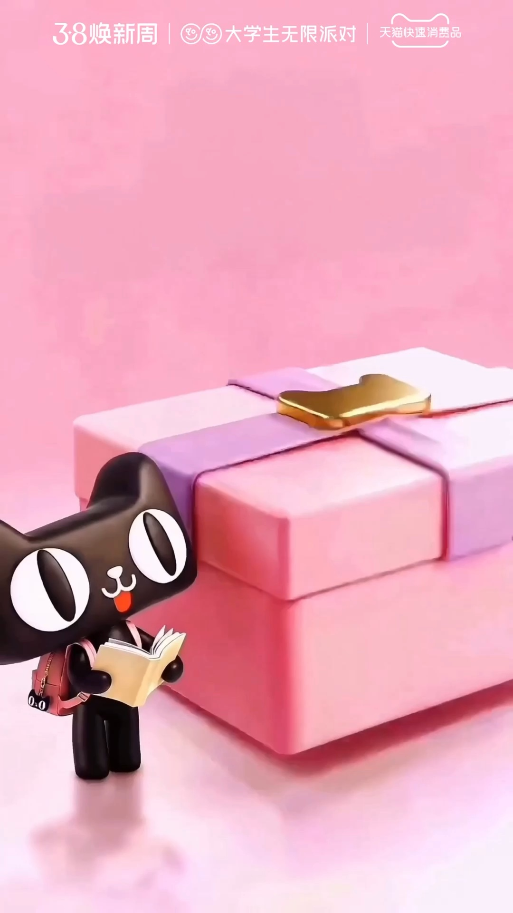
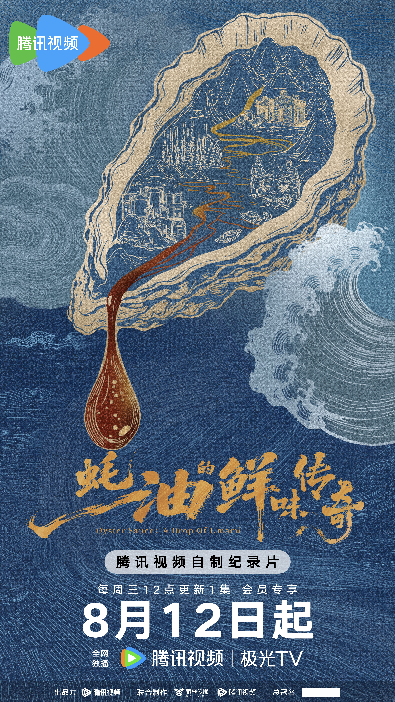

CREATIVE PORTFOLIO
Ideas made
to be seen.
AI, illustration, design and animation by Zhu Yi Studio.
Explore the work ↘SELECTED WORK
Visual stories,
different worlds.
A collection of visual design and creative projects.
 OkamotoCity Pop visuals & motion ↗
OkamotoCity Pop visuals & motion ↗
Back to SchoolAI video posters ↗ MistineCampaign visuals & motion ↗
MistineCampaign visuals & motion ↗ JETOURCampaign visuals & motion ↗
JETOURCampaign visuals & motion ↗ Guangfu Cookie Gift BoxPackaging design ↗
Guangfu Cookie Gift BoxPackaging design ↗
Oyster Sauce: A Drop of UmamiDocumentary poster concept ↗ Traditional Chinese Medicine MuseumPoster series ↗
Traditional Chinese Medicine MuseumPoster series ↗ Sleep No MoreImmersive theatre visuals ↗
Sleep No MoreImmersive theatre visuals ↗ABOUT THE STUDIO
Creative work across
ideas and formats.
Zhu Yi Studio works across AI, illustration, design and animation.